Analysis: Part I
Research Questions:
Using a cohort of first-time system involved youth, look at adjusted differences in likelihood of being diverted and likelihood of a re-complaint for diverted vs. non-diverted youth.
A. How does the likelihood of being diverted differ by race, sex, and geography?
B. For youth who are diverted, how likely are they to come back into the system with a new complaint or new petition within a year of the initial intake decision?
Methods:
For research question (A) we will build a series of logistic regression models, adjusting for race/ethnicity, age, offense, risk level, and other factors that may also be related to a decision to divert. Our outcome variable will be diversion/petition (0/1) and our independent variables of interest will be race, sex, and CSU. For research question (B) we will take a similar methodological approach, but restrict our cohort to diverted youth and focus on likelihood of a re-complaint within a year of diversion while adjusting for demographics, offense, risk level, etc. For research question (B) our outcome variable will be re-complaint within a year of the initial intake decision date (0/1) and our independent variables of interest will be race, sex, and CSU.
Cohort: first time system involved youth (no prior complaints), 2016-2021
Method: Logistic Regression, which allows us to look at the relationship between two variables (like race and decision to divert) while adjusting for other factors that may also be related to our outcome (like offense, risk, etc.).
Research Question A1: Petition
Table 1. Model Output: Petition
In the following analysis, the outcome variable is binary – split into petitioned at intake (excluding court summons) and either diverted, resolved, or referred to another agency. All records with other intake complaint decisions are excluded from this analysis.
NOTE: I am currently running the regression on youth with no prior JJ history.
Predictors included in model are:
race
gender
age at intake
CSU
referral/petitioner source
category of offense
fiscal year of intake
counts of felony, misdemeanor, status, and violation charges associated with intake/complaint
library(sjPlot)
library(sjmisc)
library(sjlabelled)
library(marginaleffects)
intake_complaints_no_prior_jj_to_model_diversion_petitioned <- df_analytic_complaints_disposition_caseload %>%
filter(jj_history_clean=="No Prior JJ History",
!is.na(intake_decision_regression_model_petition)==TRUE) %>%
mutate(race = fct_relevel(race_clean, "White"),
gender = fct_relevel(gender_clean, "Male"),
referral_source_clean = fct_relevel(referral_source_clean, "Other"),
date_opened_fy = fct_relevel(as.character(date_opened_fy), "2016"),
intake_decision_regression_model_petition_num = ifelse(intake_decision_regression_model_petition=="Petitioned",
1,0)) %>%
distinct(juvenile_number,
.keep_all=TRUE)
va_diversion_petition_model <- glm(
intake_decision_regression_model_petition_num ~ race + gender + intake_age + csu + referral_source_clean + dai_clean +
date_opened_fy + count_misd_with_case + count_felony_with_case + count_status_with_case + count_other_violation_with_case + count_violation_with_case,
family = "binomial",
data = intake_complaints_no_prior_jj_to_model_diversion_petitioned)
tab_model(va_diversion_petition_model,
p.style = "numeric_stars")| intake decision regression model petition num |
|||
|---|---|---|---|
| Predictors | Odds Ratios | CI | p |
| (Intercept) | 1.38 ** | 1.10 – 1.72 | 0.005 |
| race [American Indian] | 1.10 | 0.67 – 1.81 | 0.692 |
| race [Asian] | 0.77 ** | 0.64 – 0.92 | 0.004 |
| race [Black] | 1.15 *** | 1.10 – 1.20 | <0.001 |
| race [Hispanic] | 1.12 ** | 1.04 – 1.20 | 0.001 |
| race [Other] | 0.92 * | 0.85 – 0.98 | 0.014 |
| gender [Female] | 0.91 *** | 0.88 – 0.95 | <0.001 |
| intake age | 1.02 *** | 1.01 – 1.03 | <0.001 |
| csu [002] | 0.79 ** | 0.69 – 0.91 | 0.001 |
| csu [003] | 0.28 *** | 0.23 – 0.35 | <0.001 |
| csu [004] | 0.23 *** | 0.20 – 0.27 | <0.001 |
| csu [005] | 0.59 *** | 0.49 – 0.70 | <0.001 |
| csu [006] | 3.05 *** | 2.57 – 3.63 | <0.001 |
| csu [007] | 1.43 *** | 1.23 – 1.68 | <0.001 |
| csu [008] | 2.78 *** | 2.37 – 3.27 | <0.001 |
| csu [009] | 1.41 *** | 1.23 – 1.62 | <0.001 |
| csu [010] | 1.08 | 0.92 – 1.27 | 0.325 |
| csu [011] | 0.77 ** | 0.64 – 0.93 | 0.006 |
| csu [012] | 0.16 *** | 0.13 – 0.18 | <0.001 |
| csu [013] | 0.51 *** | 0.43 – 0.60 | <0.001 |
| csu [014] | 0.86 * | 0.75 – 0.98 | 0.028 |
| csu [015] | 0.71 *** | 0.63 – 0.81 | <0.001 |
| csu [016] | 1.03 | 0.89 – 1.18 | 0.712 |
| csu [017] | 1.54 *** | 1.30 – 1.83 | <0.001 |
| csu [018] | 0.56 *** | 0.46 – 0.68 | <0.001 |
| csu [019] | 0.50 *** | 0.44 – 0.57 | <0.001 |
| csu [020] | 0.39 *** | 0.34 – 0.45 | <0.001 |
| csu [021] | 0.25 *** | 0.21 – 0.31 | <0.001 |
| csu [022] | 2.10 *** | 1.81 – 2.43 | <0.001 |
| csu [023] | 0.52 *** | 0.45 – 0.60 | <0.001 |
| csu [024] | 4.19 *** | 3.64 – 4.84 | <0.001 |
| csu [025] | 1.51 *** | 1.31 – 1.73 | <0.001 |
| csu [026] | 1.39 *** | 1.22 – 1.59 | <0.001 |
| csu [027] | 0.45 *** | 0.39 – 0.52 | <0.001 |
| csu [028] | 0.84 | 0.69 – 1.02 | 0.073 |
| csu [029] | 1.81 *** | 1.54 – 2.11 | <0.001 |
| csu [02A] | 1.19 | 0.95 – 1.49 | 0.132 |
| csu [030] | 0.66 *** | 0.56 – 0.78 | <0.001 |
| csu [031] | 0.25 *** | 0.22 – 0.28 | <0.001 |
| referral source clean [Citizen] |
1.17 * | 1.04 – 1.32 | 0.011 |
| referral source clean [Court] |
17.17 *** | 12.42 – 24.31 | <0.001 |
| referral source clean [Law Enforcement] |
0.63 *** | 0.57 – 0.70 | <0.001 |
| referral source clean [Probation Officer] |
0.99 | 0.77 – 1.26 | 0.909 |
| referral source clean [Relative/Spouse/Self] |
0.55 *** | 0.49 – 0.62 | <0.001 |
| referral source clean [School Official] |
1.29 *** | 1.14 – 1.46 | <0.001 |
| referral source clean [School Resource Officer] |
0.27 *** | 0.24 – 0.30 | <0.001 |
| dai clean [Class 1 Misdemeanor Against Persons] |
0.31 *** | 0.27 – 0.37 | <0.001 |
| dai clean [Felony against Persons] |
2.41 *** | 1.97 – 2.94 | <0.001 |
| dai clean [Felony Weapons and Felony Narcotics Distribution] |
2.83 *** | 2.10 – 3.82 | <0.001 |
| dai clean [Other Class 1 Misdemeanor] |
0.19 *** | 0.16 – 0.22 | <0.001 |
| dai clean [Other Felony] | 0.75 ** | 0.61 – 0.91 | 0.003 |
| dai clean [Other Violation] |
0.24 *** | 0.20 – 0.28 | <0.001 |
| dai clean [Status Offense] |
0.48 *** | 0.44 – 0.53 | <0.001 |
| date opened fy [2017] | 0.91 ** | 0.86 – 0.97 | 0.002 |
| date opened fy [2018] | 0.80 *** | 0.75 – 0.85 | <0.001 |
| date opened fy [2019] | 0.76 *** | 0.71 – 0.80 | <0.001 |
| date opened fy [2020] | 0.54 *** | 0.51 – 0.58 | <0.001 |
| date opened fy [2021] | 0.69 *** | 0.64 – 0.75 | <0.001 |
| count misd with case | 1.62 *** | 1.56 – 1.69 | <0.001 |
| count felony with case | 2.36 *** | 2.17 – 2.58 | <0.001 |
| count status with case | 1.12 | 0.98 – 1.27 | 0.086 |
| count other violation with case |
2.05 *** | 1.90 – 2.22 | <0.001 |
| count violation with case | 8.17 *** | 5.17 – 13.50 | <0.001 |
| Observations | 67007 | ||
| R2 Tjur | 0.290 | ||
| * p<0.05 ** p<0.01 *** p<0.001 | |||
Table 2: Predicted Probabilities by Race/Ethnicity
| race_eth | predicted_probability | confidence_interval_low | confidence_interval_high | rri |
|---|---|---|---|---|
| White | 0.3717234 | 0.3651910 | 0.3783031 | 1.0000000 |
| American Indian | 0.4383796 | 0.3231300 | 0.5606850 | 1.1793166 |
| Asian | 0.2274392 | 0.1984426 | 0.2593021 | 0.6118506 |
| Black | 0.3950578 | 0.3873538 | 0.4028143 | 1.0627734 |
| Hispanic | 0.3232589 | 0.3105312 | 0.3362539 | 0.8696221 |
| Other | 0.3081929 | 0.2945782 | 0.3221494 | 0.8290919 |
Figure 1: Predicted Probabilities by Race/Ethnicity
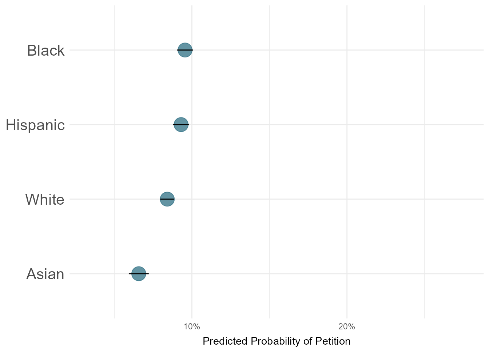
Table 3: Predicted Probabilities by Gender
| gender | predicted_probability | confidence_interval_low | confidence_interval_high | rri |
|---|---|---|---|---|
| Male | 0.3896776 | 0.3837822 | 0.3956054 | 1.177295 |
| Female | 0.3309941 | 0.3242949 | 0.3377625 | 1.000000 |
Figure 2a: Predicted Probabilities by Gender
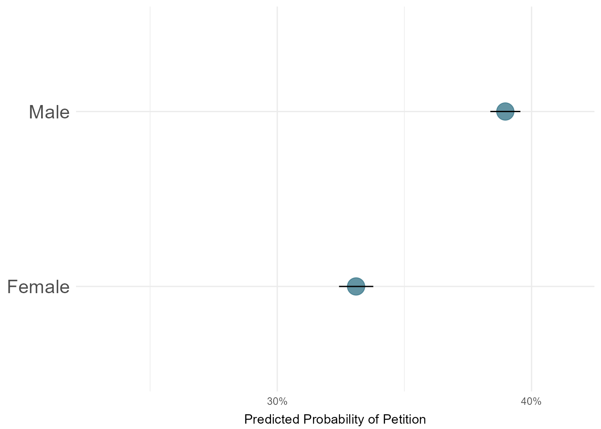
Figure 2b: Predicted Probabilities by Race/Ethnicity and Gender
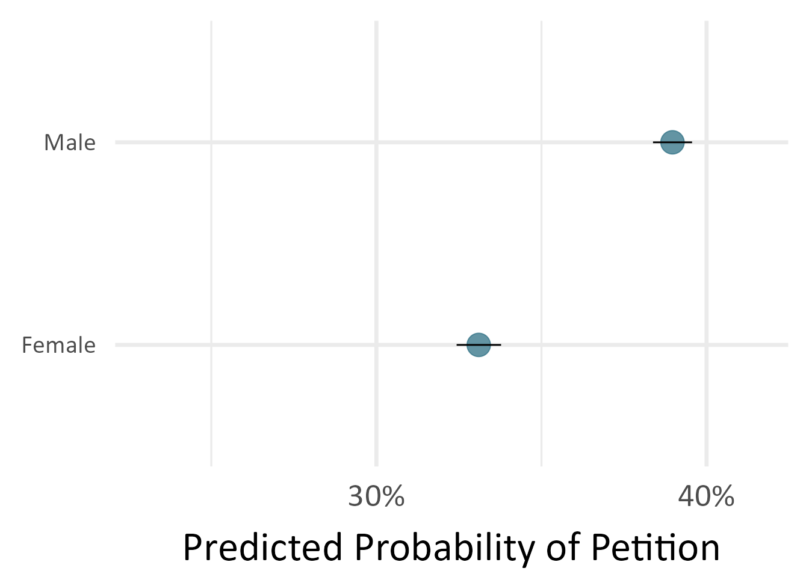
Table 4: Predicted Probabilities by CSU
| csu | predicted_probability | confidence_interval_low | confidence_interval_high |
|---|---|---|---|
| 001 | 0.4854012 | 0.4593635 | 0.5115184 |
| 002 | 0.4288769 | 0.4072909 | 0.4507371 |
| 003 | 0.2605877 | 0.2247839 | 0.2998882 |
| 004 | 0.2298039 | 0.2119744 | 0.2486599 |
| 005 | 0.3372508 | 0.3054344 | 0.3706129 |
| 006 | 0.7195378 | 0.6911149 | 0.7463052 |
| 007 | 0.6343315 | 0.6067763 | 0.6610345 |
| 008 | 0.7285289 | 0.7039413 | 0.7517945 |
| 009 | 0.4957926 | 0.4739106 | 0.5176907 |
| 010 | 0.4537735 | 0.4246306 | 0.4832368 |
| 011 | 0.4285742 | 0.3923059 | 0.4656265 |
| 012 | 0.0841671 | 0.0759480 | 0.0931860 |
| 013 | 0.3479429 | 0.3205521 | 0.3763776 |
| 014 | 0.3903121 | 0.3694018 | 0.4116334 |
| 015 | 0.3631868 | 0.3475179 | 0.3791517 |
| 016 | 0.4638531 | 0.4421608 | 0.4856830 |
| 017 | 0.6103902 | 0.5782217 | 0.6416258 |
| 018 | 0.3906775 | 0.3534308 | 0.4292436 |
| 019 | 0.3096923 | 0.2944710 | 0.3253377 |
| 020 | 0.2079775 | 0.1927741 | 0.2240470 |
| 021 | 0.1819368 | 0.1562447 | 0.2107982 |
| 022 | 0.6403314 | 0.6165645 | 0.6634293 |
| 023 | 0.2976335 | 0.2780335 | 0.3180065 |
| 024 | 0.7978397 | 0.7820137 | 0.8127918 |
| 025 | 0.5427036 | 0.5205224 | 0.5647168 |
| 026 | 0.5035496 | 0.4840147 | 0.5230737 |
| 027 | 0.2236122 | 0.2058407 | 0.2424498 |
| 028 | 0.3371997 | 0.3017100 | 0.3746244 |
| 029 | 0.5820606 | 0.5543220 | 0.6092896 |
| 02A | 0.4951704 | 0.4458106 | 0.5446246 |
| 030 | 0.3008942 | 0.2756248 | 0.3274331 |
| 031 | 0.1416803 | 0.1320424 | 0.1518986 |
Figure 3a: Predicted Probabilities by CSU
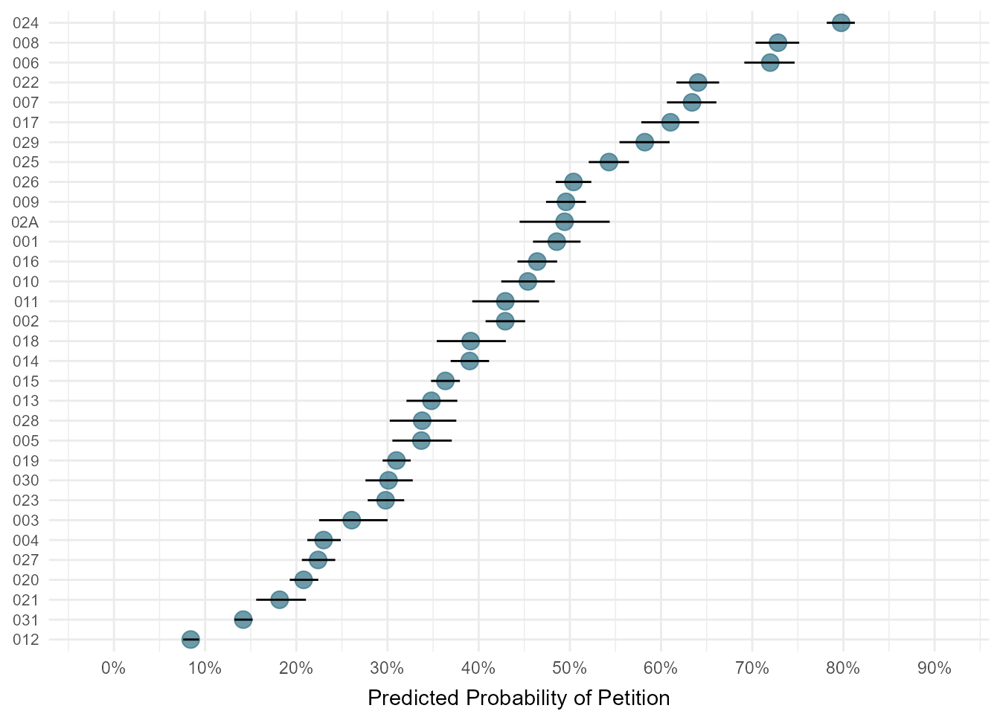
Figure 3b: Predicted Probabilities by CSU (mapped)
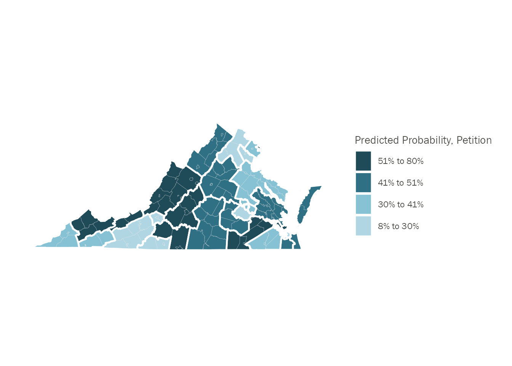
Table 5: Predicted Probabilities by Charge Type
| dai_clean | predicted_probability | confidence_interval_low | confidence_interval_high |
|---|---|---|---|
| CHINS | 0.5807868 | 0.5691560 | 0.5924176 |
| Class 1 Misdemeanor Against Persons | 0.2782043 | 0.2713500 | 0.2850585 |
| Felony Weapons and Felony Narcotics Distribution | 0.8197026 | 0.7897167 | 0.8496885 |
| Felony against Persons | 0.8102901 | 0.7999453 | 0.8206348 |
| Other Class 1 Misdemeanor | 0.2168792 | 0.2110689 | 0.2226895 |
| Other Felony | 0.6499049 | 0.6389783 | 0.6608316 |
| Other Violation | 0.2651949 | 0.2559170 | 0.2744727 |
| Status Offense | 0.4167768 | 0.4089885 | 0.4245651 |
Figure 3: Predicted Probabilities by Charge Type
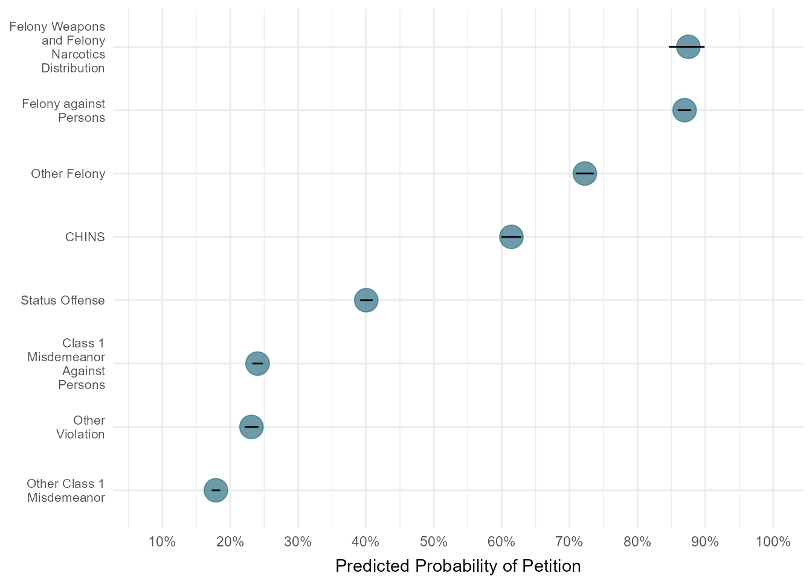
Figure 4: Predicted Probabilities of Petition by CSU for Status Offenses
NOTE: This analysis excludes CHINS complaints.
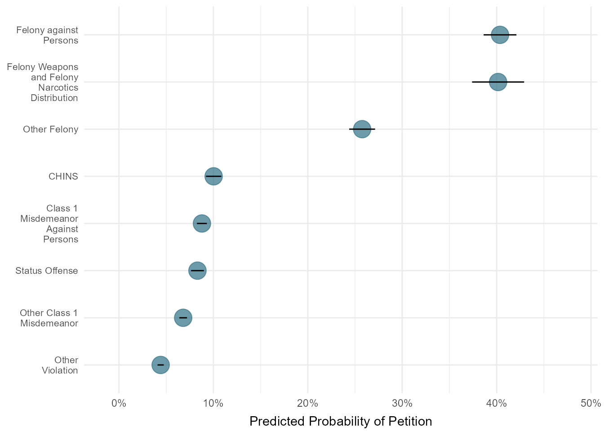
Research Question A2: Diversion Outcomes
Table 6. Model Output: Successful Diversion
In the following analysis, the outcome variable is binary – split into youth with successful diversion outcomes and those with unsuccessful diversion outcomes (whether petitioned or not). All records with other intake complaint decisions are excluded from this analysis, including diversions which were still active at time of data pull.
NOTE: I am currently running the regression for youth with no prior JJ history and who were initially diverted.
Predictors included in model are:
race
gender
age at intake
CSU
referral/petitioner source
category of offense
fiscal year of intake
counts of felony, misdemeanor, status, and violation charges associated with intake/complaint
intake_complaints_no_prior_jj_to_model_diversion_outcome <- df_analytic_complaints_disposition_caseload %>%
filter(jj_history_clean=="No Prior JJ History",
!is.na(intake_decision_regression_model_petition)==TRUE,
intake_decision_label%in%c("UNSUCCESSFUL DIVERSION/PETITION FILED", "SUCCESSFUL DIVERSION","UNSUCCESSFUL DIVERSION/NO PETITION FILED")) %>%
mutate(race = fct_relevel(race_clean, "White"),
gender = fct_relevel(gender_clean, "Male"),
referral_source_clean = fct_relevel(referral_source_clean, "Other"),
date_opened_fy = fct_relevel(as.character(date_opened_fy), "2016"),
diversion_success_regression_model_num = ifelse(intake_decision_label=="SUCCESSFUL DIVERSION",
1,0)) %>%
distinct(juvenile_number,
.keep_all=TRUE)
va_diversion_outcome_model <- glm(
diversion_success_regression_model_num ~ race + gender + intake_age + csu + referral_source_clean + dai_clean +
date_opened_fy + count_misd_with_case + count_felony_with_case + count_status_with_case + count_other_violation_with_case + count_violation_with_case,
family = "binomial",
data = intake_complaints_no_prior_jj_to_model_diversion_outcome)
tab_model(va_diversion_outcome_model,
p.style = "numeric_stars")| diversion success regression model num |
|||
|---|---|---|---|
| Predictors | Odds Ratios | CI | p |
| (Intercept) | 8.01 *** | 4.29 – 15.18 | <0.001 |
| race [American Indian] | 0.41 * | 0.18 – 1.07 | 0.049 |
| race [Asian] | 1.02 | 0.71 – 1.50 | 0.936 |
| race [Black] | 0.58 *** | 0.53 – 0.64 | <0.001 |
| race [Hispanic] | 0.54 *** | 0.48 – 0.61 | <0.001 |
| race [Other] | 0.97 | 0.84 – 1.12 | 0.667 |
| gender [Female] | 1.11 ** | 1.03 – 1.19 | 0.009 |
| intake age | 1.04 *** | 1.02 – 1.06 | <0.001 |
| csu [002] | 1.00 | 0.64 – 1.52 | 1.000 |
| csu [003] | 0.85 | 0.52 – 1.37 | 0.512 |
| csu [004] | 1.57 | 0.96 – 2.54 | 0.070 |
| csu [005] | 1.85 * | 1.11 – 3.05 | 0.017 |
| csu [006] | 0.63 | 0.34 – 1.19 | 0.145 |
| csu [007] | 0.52 * | 0.31 – 0.86 | 0.012 |
| csu [008] | 0.40 *** | 0.25 – 0.65 | <0.001 |
| csu [009] | 0.75 | 0.48 – 1.14 | 0.187 |
| csu [010] | 0.95 | 0.60 – 1.46 | 0.803 |
| csu [011] | 0.71 | 0.43 – 1.16 | 0.176 |
| csu [012] | 0.63 * | 0.41 – 0.92 | 0.021 |
| csu [013] | 0.89 | 0.57 – 1.36 | 0.595 |
| csu [014] | 0.76 | 0.49 – 1.13 | 0.185 |
| csu [015] | 0.96 | 0.63 – 1.44 | 0.858 |
| csu [016] | 0.77 | 0.50 – 1.16 | 0.222 |
| csu [017] | 0.76 | 0.48 – 1.20 | 0.256 |
| csu [018] | 0.94 | 0.55 – 1.60 | 0.819 |
| csu [019] | 0.73 | 0.47 – 1.10 | 0.145 |
| csu [020] | 1.00 | 0.65 – 1.50 | 0.997 |
| csu [021] | 1.24 | 0.76 – 1.98 | 0.377 |
| csu [022] | 0.47 *** | 0.30 – 0.71 | 0.001 |
| csu [023] | 0.65 * | 0.43 – 0.97 | 0.042 |
| csu [024] | 1.67 * | 1.02 – 2.69 | 0.037 |
| csu [025] | 0.86 | 0.54 – 1.34 | 0.509 |
| csu [026] | 0.50 *** | 0.33 – 0.74 | 0.001 |
| csu [027] | 0.83 | 0.54 – 1.23 | 0.374 |
| csu [028] | 0.68 | 0.42 – 1.07 | 0.102 |
| csu [029] | 0.76 | 0.48 – 1.18 | 0.232 |
| csu [02A] | 1.90 | 0.93 – 4.21 | 0.090 |
| csu [030] | 1.44 | 0.90 – 2.25 | 0.116 |
| csu [031] | 1.02 | 0.67 – 1.49 | 0.930 |
| referral source clean [Citizen] |
0.44 *** | 0.32 – 0.60 | <0.001 |
| referral source clean [Court] |
0.41 | 0.17 – 1.18 | 0.073 |
| referral source clean [Law Enforcement] |
0.70 ** | 0.54 – 0.90 | 0.006 |
| referral source clean [Probation Officer] |
0.52 * | 0.32 – 0.89 | 0.013 |
| referral source clean [Relative/Spouse/Self] |
0.31 *** | 0.22 – 0.42 | <0.001 |
| referral source clean [School Official] |
0.30 *** | 0.22 – 0.40 | <0.001 |
| referral source clean [School Resource Officer] |
0.70 * | 0.53 – 0.92 | 0.011 |
| dai clean [Class 1 Misdemeanor Against Persons] |
1.23 | 0.88 – 1.75 | 0.234 |
| dai clean [Felony against Persons] |
1.37 | 0.78 – 2.39 | 0.274 |
| dai clean [Felony Weapons and Felony Narcotics Distribution] |
1.53 | 0.59 – 4.78 | 0.418 |
| dai clean [Other Class 1 Misdemeanor] |
1.48 * | 1.05 – 2.09 | 0.027 |
| dai clean [Other Felony] | 0.93 | 0.55 – 1.54 | 0.790 |
| dai clean [Other Violation] |
1.40 | 0.95 – 2.05 | 0.084 |
| dai clean [Status Offense] |
0.85 | 0.66 – 1.09 | 0.194 |
| date opened fy [2017] | 0.96 | 0.85 – 1.08 | 0.507 |
| date opened fy [2018] | 1.08 | 0.96 – 1.21 | 0.204 |
| date opened fy [2019] | 1.30 *** | 1.15 – 1.47 | <0.001 |
| date opened fy [2020] | 1.29 *** | 1.14 – 1.47 | <0.001 |
| date opened fy [2021] | 1.14 | 0.98 – 1.33 | 0.081 |
| count misd with case | 0.92 ** | 0.87 – 0.98 | 0.007 |
| count felony with case | 1.18 | 0.90 – 1.66 | 0.282 |
| count status with case | 0.78 | 0.61 – 1.02 | 0.057 |
| count other violation with case |
0.97 | 0.85 – 1.14 | 0.667 |
| count violation with case | 0.00 | NA – 0.00 | 0.858 |
| Observations | 27427 | ||
| R2 Tjur | 0.073 | ||
| * p<0.05 ** p<0.01 *** p<0.001 | |||
Table 7: Predicted Probabilities by Race/Ethnicity
| race_eth | predicted_probability | confidence_interval_low | confidence_interval_high | rri |
|---|---|---|---|---|
| White | 0.9057354 | 0.8982845 | 0.9126935 | 1.0000000 |
| American Indian | 0.7912079 | 0.6121744 | 0.9009640 | 0.8735531 |
| Asian | 0.9197727 | 0.8886498 | 0.9427569 | 1.0154983 |
| Black | 0.8550246 | 0.8129230 | 0.8889457 | 0.9440115 |
| Hispanic | 0.8325005 | 0.8102419 | 0.8526231 | 0.9191432 |
| Other | 0.8999806 | 0.8876042 | 0.9111306 | 0.9936463 |
Figure 5: Predicted Probabilities by Race/Ethnicity
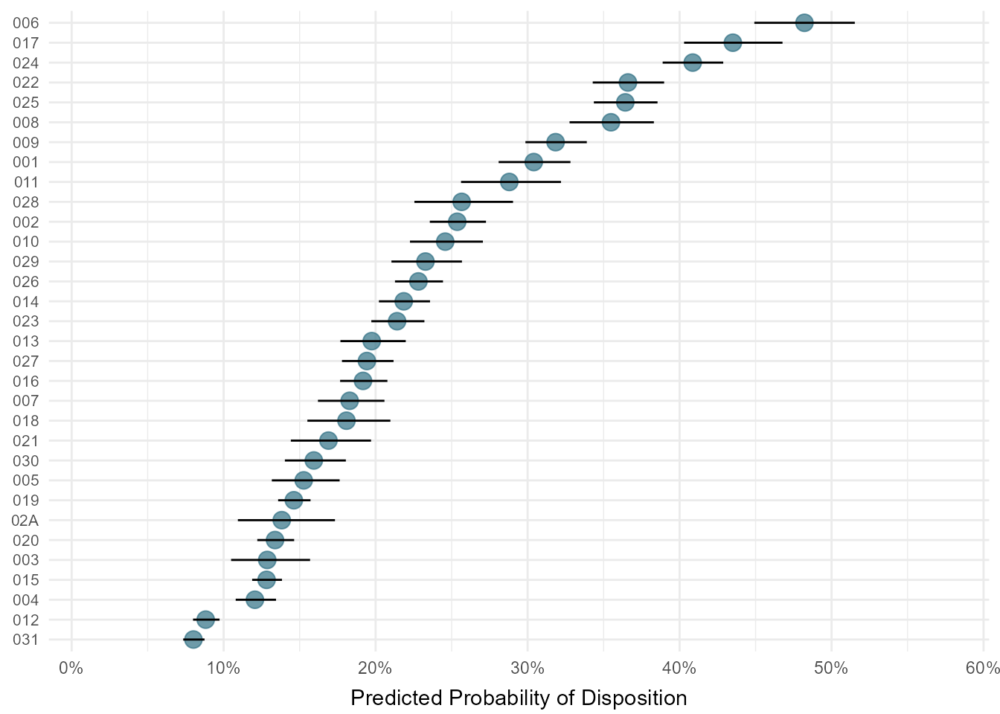
Table 8: Predicted Probabilities by Gender
| gender | predicted_probability | confidence_interval_low | confidence_interval_high | rri |
|---|---|---|---|---|
| Male | 0.8830580 | 0.8696060 | 0.8952894 | 0.9950822 |
| Female | 0.8874222 | 0.8685222 | 0.9039060 | 1.0000000 |
Figure 6a: Predicted Probabilities by Gender
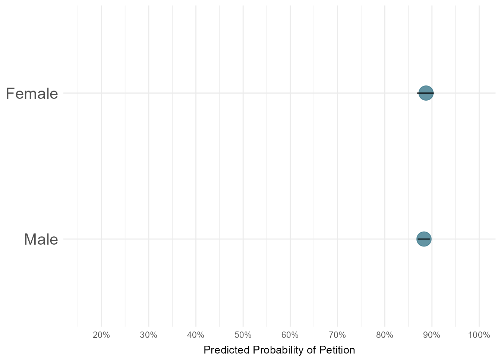
Figure 6b: Predicted Probabilities by Race/Ethnicity and Gender
Table 9: Predicted Probabilities by CSU
| csu | predicted_probability | confidence_interval_low | confidence_interval_high |
|---|---|---|---|
| 001 | 0.9097167 | 0.8734661 | 0.9363388 |
| 002 | 0.9144488 | 0.8971519 | 0.9290667 |
| 003 | 0.8430580 | 0.7523072 | 0.9047681 |
| 004 | 0.9129256 | 0.8858305 | 0.9340690 |
| 005 | 0.9450726 | 0.9252430 | 0.9598705 |
| 006 | 0.8529481 | 0.7792497 | 0.9050403 |
| 007 | 0.8215775 | 0.7656261 | 0.8665008 |
| 008 | 0.7142401 | 0.5530590 | 0.8346705 |
| 009 | 0.8897231 | 0.8692255 | 0.9073503 |
| 010 | 0.8860952 | 0.8609243 | 0.9072015 |
| 011 | 0.8283103 | 0.7787569 | 0.8686369 |
| 012 | 0.8761017 | 0.8619703 | 0.8889728 |
| 013 | 0.8552293 | 0.6724594 | 0.9444389 |
| 014 | 0.8686770 | 0.5428921 | 0.9735742 |
| 015 | 0.9165729 | 0.9011369 | 0.9297866 |
| 016 | 0.8825798 | 0.8634733 | 0.8993241 |
| 017 | 0.8316305 | 0.7919043 | 0.8650651 |
| 018 | 0.8493373 | 0.7993413 | 0.8886122 |
| 019 | 0.8825973 | 0.8635360 | 0.8993066 |
| 020 | 0.9208574 | 0.9076423 | 0.9323227 |
| 021 | 0.8841726 | 0.8518960 | 0.9101570 |
| 022 | 0.7865790 | 0.7514089 | 0.8179787 |
| 023 | 0.8020044 | 0.7773403 | 0.8245531 |
| 024 | 0.9216153 | 0.8973555 | 0.9405214 |
| 025 | 0.8805562 | 0.8513954 | 0.9046356 |
| 026 | 0.8456389 | 0.8203254 | 0.8679601 |
| 027 | 0.8808054 | 0.8640425 | 0.8957509 |
| 028 | 0.8554227 | 0.8202880 | 0.8846543 |
| 029 | 0.8548570 | 0.8223190 | 0.8822894 |
| 02A | 0.9485095 | 0.9065886 | 0.9721943 |
| 030 | 0.8974267 | 0.8726000 | 0.9178707 |
| 031 | 0.9008589 | 0.8897499 | 0.9109605 |
Figure 7a: Predicted Probabilities by CSU
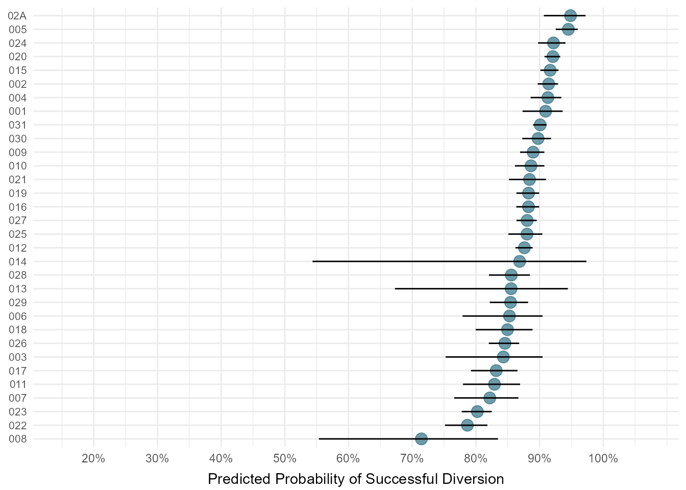
Figure 7b: Predicted Probabilities by CSU (mapped)
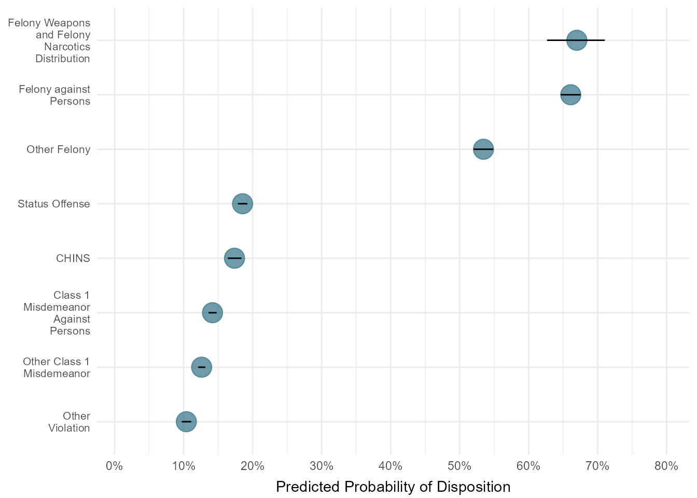
Table 10: Predicted Probabilities by Charge Type
| dai_clean | predicted_probability | confidence_interval_low | confidence_interval_high |
|---|---|---|---|
| CHINS | 0.7160839 | 0.6844364 | 0.7477315 |
| Class 1 Misdemeanor Against Persons | 0.8764256 | 0.8685004 | 0.8843507 |
| Felony Weapons and Felony Narcotics Distribution | 0.9333333 | 0.8771193 | 0.9895474 |
| Felony against Persons | 0.9211356 | 0.9003273 | 0.9419440 |
| Other Class 1 Misdemeanor | 0.9052192 | 0.8994370 | 0.9110014 |
| Other Felony | 0.8804423 | 0.8639758 | 0.8969088 |
| Other Violation | 0.9089867 | 0.9005549 | 0.9174185 |
| Status Offense | 0.7355803 | 0.7226395 | 0.7485212 |
Figure 8: Predicted Probabilities by Charge Type

Figure 9: Predicted Probabilities of Petition by CSU for Status Offenses
NOTE: This analysis excludes CHINS complaints.
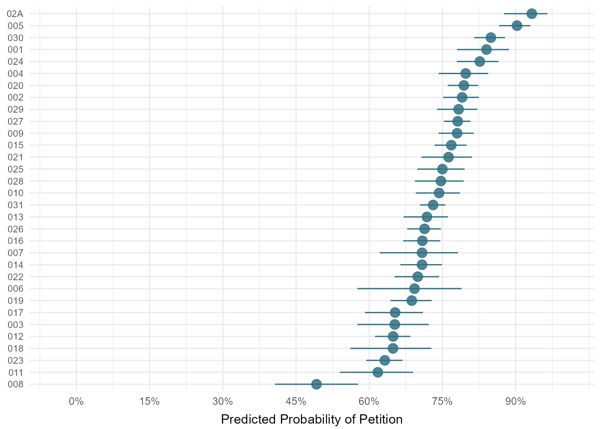
Research Question B: Subsequent Complaint
Table 6. Model Output: Subsequent Complaint within One Year
In the following analysis, the outcome variable is binary – whether a youth received another complaint within a year of their first intake (where the intake decision was diversion). All records with other intake complaint decisions are excluded from this analysis.
NOTE: I am currently running the regression on youth with no prior JJ history and who were initially diverted. I have also removed youth whose first complaint occurred after 6/30/2020. Since the sample is through 6/30/2021, there needs to be at least a year from a youth’s initial intake during which there could be a subsequent complaint/petition.
Predictors included in model are:
race
gender
age at intake
CSU
referral/petitioner source
category of offense
fiscal year of intake
counts of felony, misdemeanor, status, and violation charges associated with intake/complaint
intake_initial_diversion_re_complaint_within_a_year_model <- df_analytic_complaints_disposition_caseload %>%
filter(jj_history_clean=="No Prior JJ History",
intake_decision_clean=="Diverted",
!is.na(intake_decision_regression_model_petition)==TRUE,
date_opened<="2020-06-30") %>%
mutate(race = fct_relevel(race_clean, "White"),
gender = fct_relevel(gender_clean, "Male"),
referral_source_clean = fct_relevel(referral_source_clean, "Other"),
date_opened_fy = fct_relevel(as.character(date_opened_fy), "2016")) %>%
distinct(juvenile_number,
.keep_all=TRUE)
va_diversion_re_complaint_model <- glm(
regression_outcome_new_complaint_one_year_first_time_jj ~ race + gender + intake_age + csu + referral_source_clean + dai_clean +
date_opened_fy + count_misd_with_case + count_felony_with_case + count_status_with_case + count_other_violation_with_case + count_violation_with_case,
family = "binomial",
data = intake_initial_diversion_re_complaint_within_a_year_model)
tab_model(va_diversion_re_complaint_model,
p.style = "numeric_stars")| regression outcome new complaint one year first time jj |
|||
|---|---|---|---|
| Predictors | Odds Ratios | CI | p |
| (Intercept) | 0.22 *** | 0.13 – 0.38 | <0.001 |
| race [American Indian] | 1.65 | 0.64 – 3.77 | 0.263 |
| race [Asian] | 0.72 * | 0.52 – 0.98 | 0.047 |
| race [Black] | 1.21 *** | 1.12 – 1.31 | <0.001 |
| race [Hispanic] | 1.46 *** | 1.31 – 1.63 | <0.001 |
| race [Other] | 0.59 *** | 0.51 – 0.68 | <0.001 |
| gender [Female] | 0.69 *** | 0.64 – 0.74 | <0.001 |
| intake age | 0.97 *** | 0.95 – 0.99 | <0.001 |
| csu [002] | 1.30 | 0.93 – 1.86 | 0.137 |
| csu [003] | 1.21 | 0.81 – 1.83 | 0.355 |
| csu [004] | 1.12 | 0.76 – 1.66 | 0.567 |
| csu [005] | 0.92 | 0.63 – 1.35 | 0.656 |
| csu [006] | 0.77 | 0.36 – 1.51 | 0.461 |
| csu [007] | 0.94 | 0.58 – 1.51 | 0.794 |
| csu [008] | 1.22 | 0.78 – 1.91 | 0.378 |
| csu [009] | 0.87 | 0.61 – 1.26 | 0.453 |
| csu [010] | 0.80 | 0.55 – 1.17 | 0.246 |
| csu [011] | 0.93 | 0.59 – 1.45 | 0.738 |
| csu [012] | 1.38 | 1.00 – 1.93 | 0.057 |
| csu [013] | 1.52 * | 1.07 – 2.17 | 0.021 |
| csu [014] | 1.07 | 0.77 – 1.52 | 0.692 |
| csu [015] | 0.92 | 0.66 – 1.30 | 0.617 |
| csu [016] | 1.04 | 0.74 – 1.48 | 0.843 |
| csu [017] | 1.01 | 0.68 – 1.51 | 0.964 |
| csu [018] | 1.07 | 0.68 – 1.70 | 0.764 |
| csu [019] | 1.07 | 0.76 – 1.53 | 0.686 |
| csu [020] | 0.96 | 0.69 – 1.36 | 0.820 |
| csu [021] | 0.76 | 0.50 – 1.15 | 0.184 |
| csu [022] | 1.16 | 0.80 – 1.70 | 0.440 |
| csu [023] | 1.49 * | 1.06 – 2.11 | 0.024 |
| csu [024] | 1.06 | 0.72 – 1.57 | 0.780 |
| csu [025] | 1.29 | 0.87 – 1.92 | 0.215 |
| csu [026] | 1.39 | 1.00 – 1.97 | 0.058 |
| csu [027] | 1.20 | 0.86 – 1.70 | 0.294 |
| csu [028] | 1.35 | 0.92 – 2.01 | 0.130 |
| csu [029] | 0.99 | 0.67 – 1.49 | 0.977 |
| csu [02A] | 0.92 | 0.55 – 1.51 | 0.738 |
| csu [030] | 1.22 | 0.84 – 1.78 | 0.303 |
| csu [031] | 1.32 | 0.97 – 1.85 | 0.090 |
| referral source clean [Citizen] |
1.56 *** | 1.22 – 2.02 | 0.001 |
| referral source clean [Court] |
0.56 | 0.13 – 1.67 | 0.355 |
| referral source clean [Law Enforcement] |
1.36 ** | 1.11 – 1.67 | 0.003 |
| referral source clean [Probation Officer] |
1.45 | 0.91 – 2.28 | 0.111 |
| referral source clean [Relative/Spouse/Self] |
2.60 *** | 1.99 – 3.42 | <0.001 |
| referral source clean [School Official] |
1.27 | 0.98 – 1.64 | 0.069 |
| referral source clean [School Resource Officer] |
1.23 | 1.00 – 1.54 | 0.057 |
| dai clean [Class 1 Misdemeanor Against Persons] |
1.21 | 0.88 – 1.65 | 0.234 |
| dai clean [Felony against Persons] |
0.87 | 0.54 – 1.41 | 0.570 |
| dai clean [Felony Weapons and Felony Narcotics Distribution] |
0.75 | 0.32 – 1.63 | 0.490 |
| dai clean [Other Class 1 Misdemeanor] |
0.87 | 0.64 – 1.19 | 0.380 |
| dai clean [Other Felony] | 1.32 | 0.86 – 2.05 | 0.210 |
| dai clean [Other Violation] |
1.19 | 0.86 – 1.66 | 0.289 |
| dai clean [Status Offense] |
1.20 | 0.94 – 1.53 | 0.138 |
| date opened fy [2017] | 1.07 | 0.96 – 1.18 | 0.210 |
| date opened fy [2018] | 0.98 | 0.88 – 1.08 | 0.637 |
| date opened fy [2019] | 0.93 | 0.85 – 1.03 | 0.170 |
| date opened fy [2020] | 0.70 *** | 0.63 – 0.78 | <0.001 |
| count misd with case | 1.18 *** | 1.11 – 1.26 | <0.001 |
| count felony with case | 0.94 | 0.73 – 1.19 | 0.644 |
| count status with case | 1.64 *** | 1.34 – 2.00 | <0.001 |
| count other violation with case |
1.02 | 0.90 – 1.13 | 0.729 |
| count violation with case | 1.94 | 0.89 – 4.19 | 0.080 |
| Observations | 25255 | ||
| R2 Tjur | 0.036 | ||
| * p<0.05 ** p<0.01 *** p<0.001 | |||
Table 7: Predicted Probabilities by Race/Ethnicity
| race_eth | predicted_probability | confidence_interval_low | confidence_interval_high | rri |
|---|---|---|---|---|
| White | 0.1780618 | 0.1712466 | 0.1850877 | 1.0000000 |
| American Indian | 0.2532022 | 0.1242709 | 0.4475390 | 1.4219901 |
| Asian | 0.1226664 | 0.0927225 | 0.1605689 | 0.6888974 |
| Black | 0.2090518 | 0.2001896 | 0.2181993 | 1.1740402 |
| Hispanic | 0.2442223 | 0.2278856 | 0.2613338 | 1.3715589 |
| Other | 0.1156706 | 0.1031118 | 0.1295382 | 0.6496092 |
Figure 6: Predicted Probabilities by Race/Ethnicity

Table 8: Predicted Probabilities by Gender
| gender | predicted_probability | confidence_interval_low | confidence_interval_high | rri |
|---|---|---|---|---|
| Male | 0.2083014 | 0.2018444 | 0.2149094 | 1.343629 |
| Female | 0.1550290 | 0.1479372 | 0.1623959 | 1.000000 |
Figure 7: Predicted Probabilities by Gender
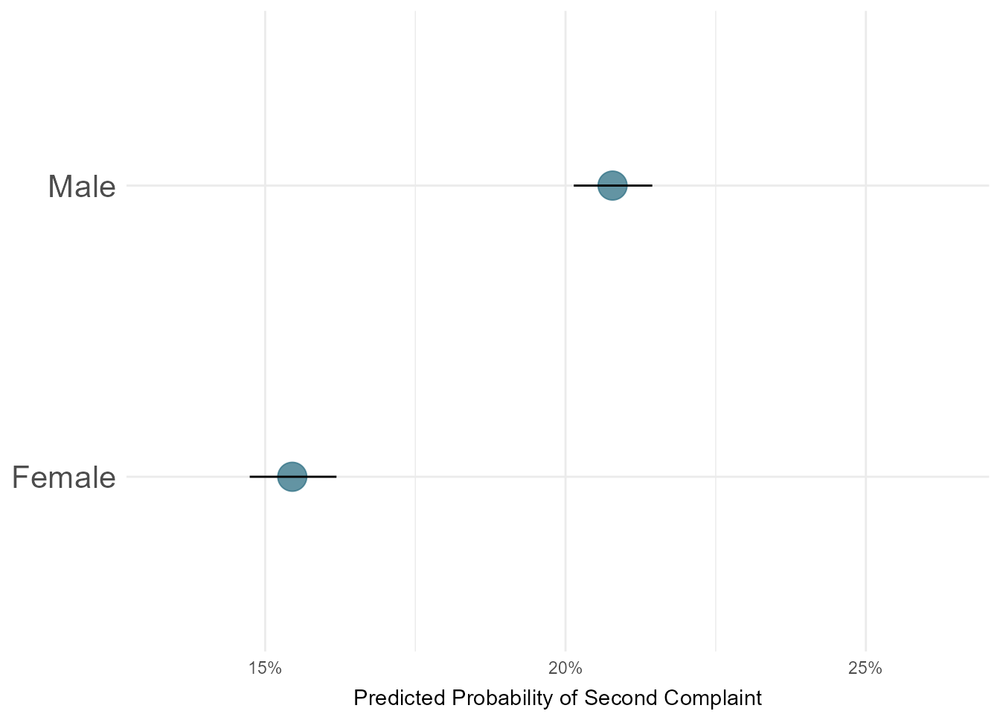
Table 9: Predicted Probabilities by CSU
| csu | predicted_probability | confidence_interval_low | confidence_interval_high |
|---|---|---|---|
| 001 | 0.1722027 | 0.1323946 | 0.2209323 |
| 002 | 0.1886919 | 0.1663321 | 0.2132885 |
| 003 | 0.2360601 | 0.1920822 | 0.2865357 |
| 004 | 0.2038281 | 0.1697913 | 0.2426935 |
| 005 | 0.1614693 | 0.1346801 | 0.1924023 |
| 006 | 0.1165528 | 0.0654049 | 0.1991751 |
| 007 | 0.1614712 | 0.1186464 | 0.2159658 |
| 008 | 0.2340447 | 0.1833524 | 0.2937116 |
| 009 | 0.1453870 | 0.1244854 | 0.1691201 |
| 010 | 0.1423755 | 0.1180885 | 0.1706909 |
| 011 | 0.1715770 | 0.1302686 | 0.2226314 |
| 012 | 0.1983607 | 0.1815997 | 0.2162599 |
| 013 | 0.2694733 | 0.2387547 | 0.3025734 |
| 014 | 0.1736668 | 0.1537609 | 0.1955542 |
| 015 | 0.1459239 | 0.1297427 | 0.1637435 |
| 016 | 0.1644160 | 0.1441380 | 0.1869238 |
| 017 | 0.1969410 | 0.1602807 | 0.2395939 |
| 018 | 0.1902335 | 0.1441111 | 0.2468597 |
| 019 | 0.1740112 | 0.1532363 | 0.1969476 |
| 020 | 0.1449913 | 0.1289174 | 0.1626951 |
| 021 | 0.1523733 | 0.1206387 | 0.1906459 |
| 022 | 0.2140483 | 0.1809579 | 0.2513328 |
| 023 | 0.2587818 | 0.2325782 | 0.2868343 |
| 024 | 0.1799151 | 0.1483664 | 0.2164672 |
| 025 | 0.1856597 | 0.1514303 | 0.2255697 |
| 026 | 0.2086456 | 0.1873897 | 0.2316253 |
| 027 | 0.1951612 | 0.1749083 | 0.2171421 |
| 028 | 0.2217189 | 0.1842269 | 0.2643682 |
| 029 | 0.1750877 | 0.1421183 | 0.2137994 |
| 02A | 0.1637726 | 0.1163602 | 0.2255721 |
| 030 | 0.2255861 | 0.1920561 | 0.2630638 |
| 031 | 0.2138145 | 0.1987882 | 0.2296512 |
Figure 8a: Predicted Probabilities by CSU
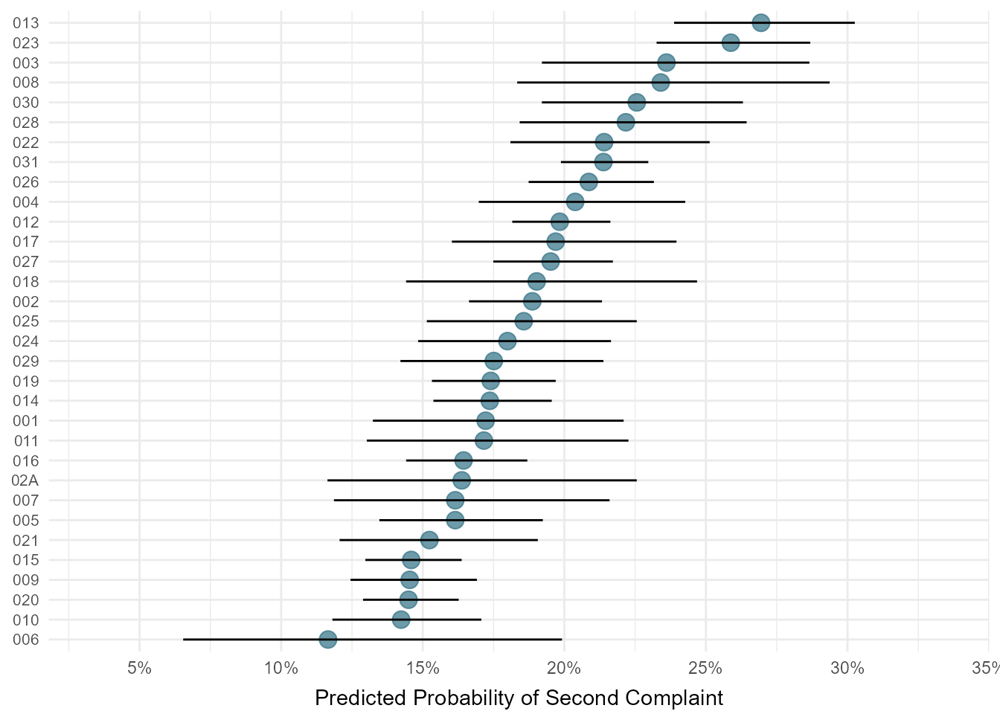
Figure 8b: Predicted Probabilities by CSU (mapped)
Table 10a: Predicted Probabilities by Charge Type
| dai_clean | predicted_probability | confidence_interval_low | confidence_interval_high |
|---|---|---|---|
| CHINS | 0.3219667 | 0.2853373 | 0.3609236 |
| Class 1 Misdemeanor Against Persons | 0.2131030 | 0.2028086 | 0.2237733 |
| Felony Weapons and Felony Narcotics Distribution | 0.1152948 | 0.0606028 | 0.2083951 |
| Felony against Persons | 0.1238394 | 0.0997025 | 0.1528276 |
| Other Class 1 Misdemeanor | 0.1509186 | 0.1436243 | 0.1585147 |
| Other Felony | 0.1888206 | 0.1684926 | 0.2109788 |
| Other Violation | 0.1783754 | 0.1670105 | 0.1903369 |
| Status Offense | 0.2488729 | 0.2348941 | 0.2633972 |
Table 10b: Charge Type of Subsequent Complaint (initial offense is status)
| Subsequent Offense | All Complaints (N) | All Complaints (column %) |
|---|---|---|
| Class 1 Misdemeanor Against Persons | 168 | 3.9% |
| Court Order Violation | 136 | 3.2% |
| Felony Weapons and Felony Narcotics Distribution | 7 | 0.2% |
| Felony against Persons | 28 | 0.7% |
| Other Class 1 Misdemeanor | 145 | 3.4% |
| Other Felony | 51 | 1.2% |
| Other Violation | 109 | 2.5% |
| Prob./Parole Violation | 12 | 0.3% |
| Status Offense | 482 | 11.3% |
Figure 9: Predicted Probabilities by Charge Type
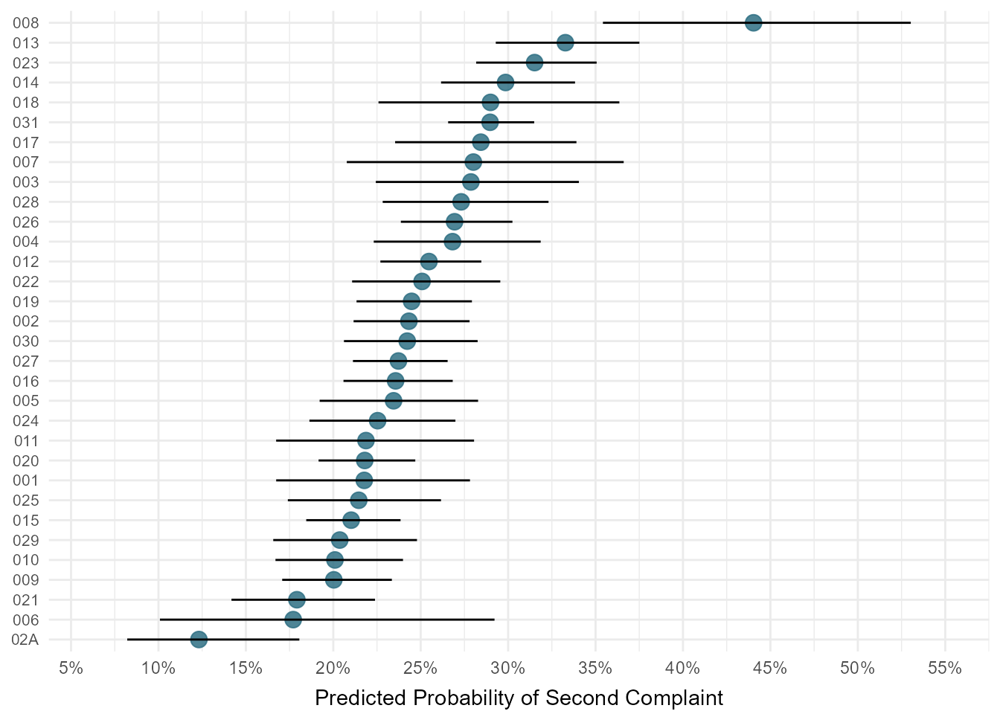
Figure 10: Predicted Probabilities by CSU for Status Offenses
NOTE: This analysis excludes CHINS complaints.
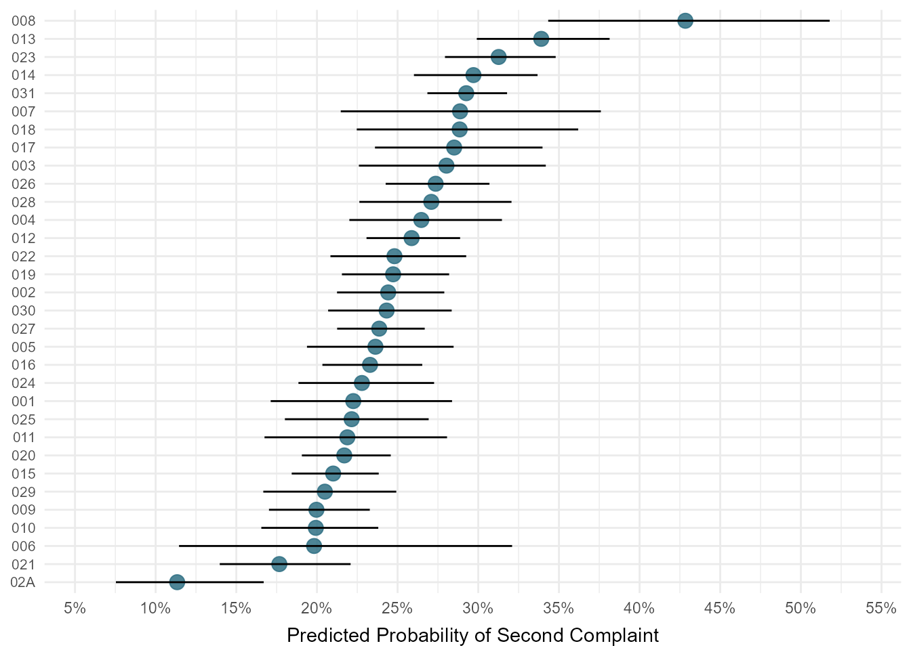